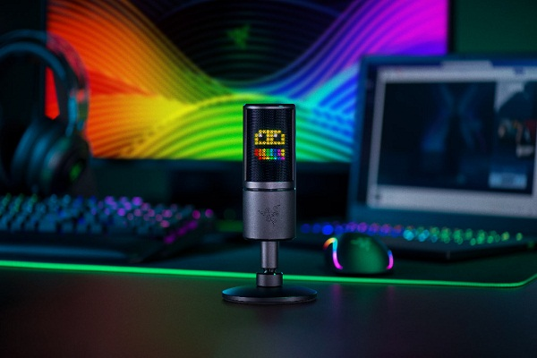
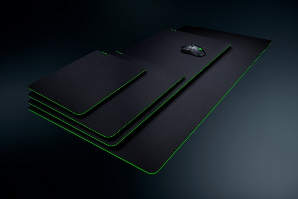
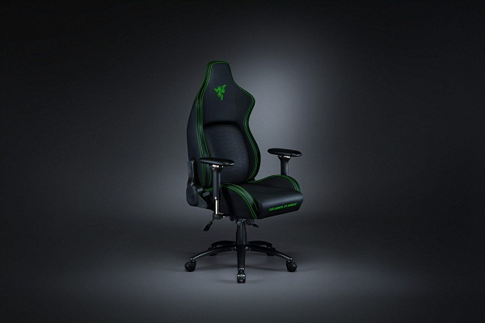

- Energía requerida/consumo: 5 V 100 mA
- Frecuencia de muestreo: mín. 44,1 kHz/máx. 48 kHz
- Velocidad de bits: 16 bits
- Cápsulas: cápsulas de condensador de 25 mm de diámetro
- Patrones polares: supercardioide
- Respuesta de frecuencia: 20 Hz-20 kHz
- Sensibilidad: 17,8 mV/Pa (a 1 kHz)
- Nivel de presión sonora máx.: 110 dB (THD < 1 % a 1 kHz)
- Patrón de captación supercardioide para reducir el ruido ambiental
- Soporte de suspensión de impactos integrado para amortiguar las vibraciones
- Micrófono de condensador para streaming
- Diseñado para la portabilidad para retransmitir estés donde estés.
- Puerto de control de los auriculares de 3,5 mm sin latencia
- Botón de desactivación del micrófono
Seiren


- Tamaño extra grande para acciones de juego de baja resolución
- Acabado textil texturizado para un equilibrio perfecto entre velocidad y control.
- Espuma densa con base de goma para una comodidad máxima
- Costura antidesgaste
- Tamaño aprox.: 455 mm (largo), 455 mm (ancho), 5 mm (alto)
- Peso aproximado: 617 g / 1,4 lb
Gigantus
- Sistema de soporte lumbar ergonómico.
- Cojines de espuma de alta densidad.
- Cojín de espuma con efecto memoria.
- Apoyabrazos 4D.
- 299lbs(< 136kg)
- Cuero PVC
- Metal 5 estrellas con laca en polvo
- Reclinacion total 139 grados
Iskur
